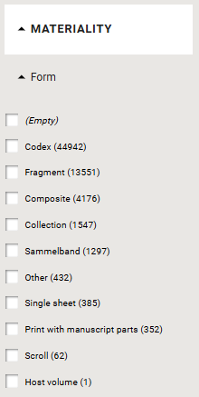
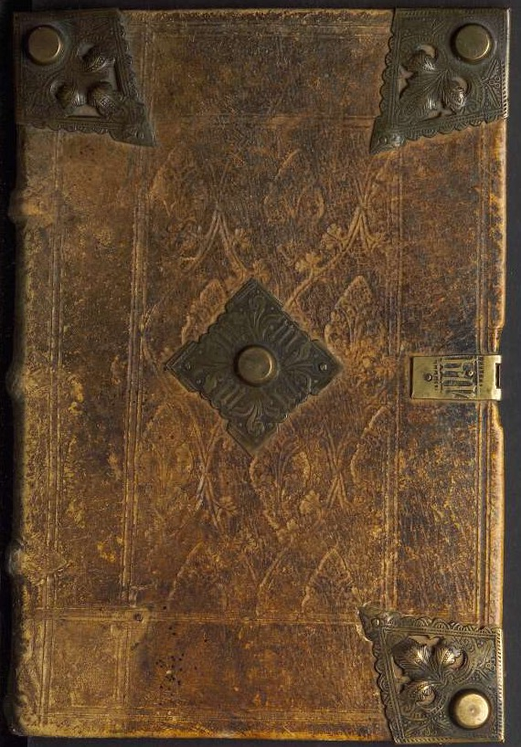
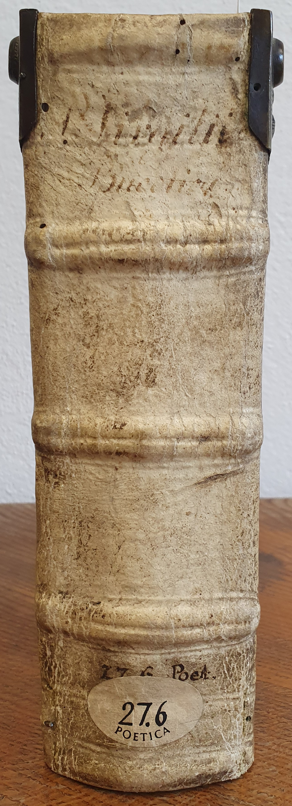
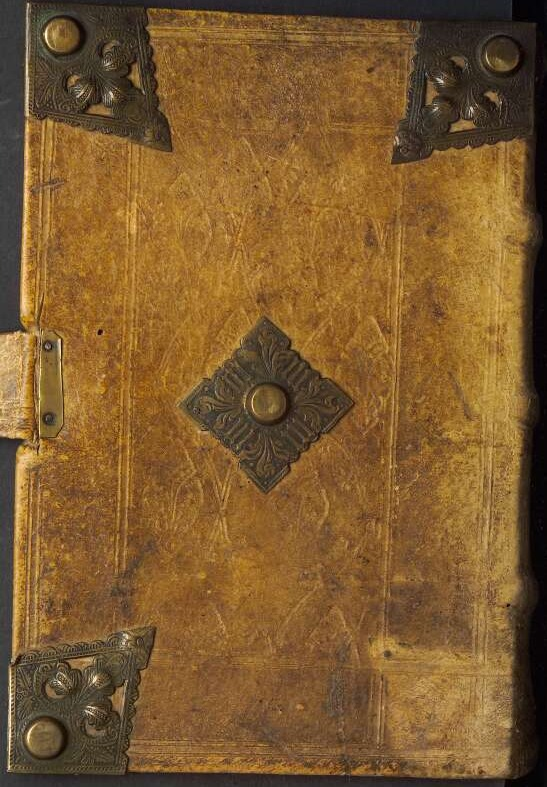
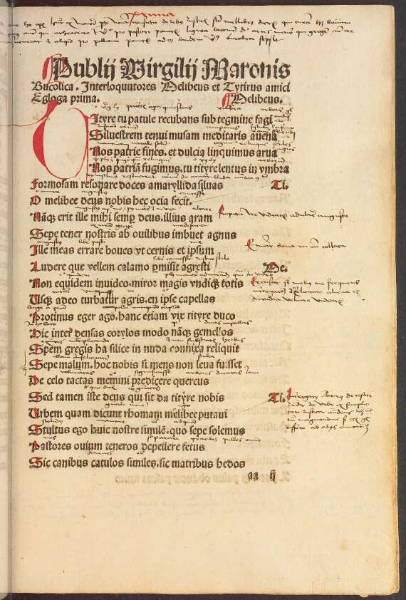
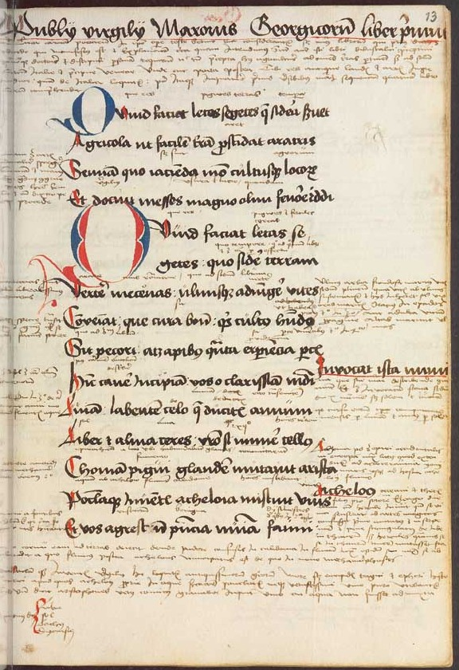
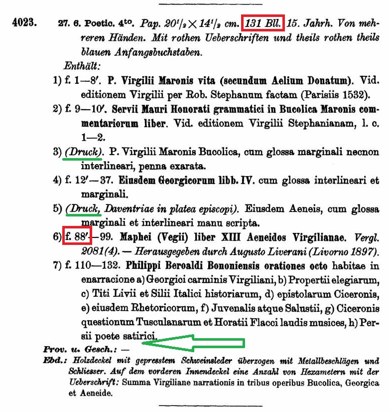

Roadmap
- Motivation
- An Example — A: 27.6 Poet.
- Prints in the Realm of Manuscript
- Manuscripts in the Realm of Print
- Manuscripts and Prints in Conceptual Reference Models
- Digital Representation of Manuscripts and Prints
- The (desired) Future of Presentation of Cultural Objects
Motivation

- Core data fields in the Handschriftenportal
- Identification (Settlement, Repository, Shelf mark, Title)
- Materiality (Form, Support, Extent, Format, Size)
- Origin (Place, Date, Type of Dating)
- Content (Language, Decoration, Musical Notation)
For most fields we curate authority data and/or controlled vocabulary
Information for these fields is derived from descriptions, but „attached“ to the Cultural Object Document (KOD)
- At HAB: Implementation of IIIF → examination of all digital facsimile of manuscripts
An Example — A: 27.6 Poet.



'Sammelband' and 'Print with Manuscript Parts'?



Prints in the Realm of Manuscript
- Prints should be mentioned
- Descriptions are stored in TEI
- TEI allows to describe the object (msIdentifier, objectDesc, etc)
- TEI allows to represent the object in various ways
- Concerning the bibliographical level, TEI is less useful: It is not possible to represent the manifestation level properly.
- For parts of a volume that have their own context of production, TEI offers <msPart>, but this element (so far) is reserved for (manuscript) booklets only.
- The Music Encoding Initiative (MEI) adapts the Functional Requirements for Bibliographical Records (FRBRoo)
- WEMI: Work, Expression, Manifestation, Item
Manuscripts in the Realm of Print
- Catalogue entries for printed works address their manifestation.
- The object appears most often only as shelf mark.
- Information about provenances begin to sink in.
- Terms like Marginalien or handschriftliche Annotationen show hints of hand-written texts.
- Note: Those information are currently kept at the local level of catalogue entries and cannot be searched in Union catalogues!
- Latest future trends raise the idea to advance the item level information to the manifestation level, only to make it searchable.
- Online catalogues are huge information systems, cataloguing rules are well established, and thus both change slowly.
- The introduction of RDA did not change very much, since the WEMI hierarchy is not fully implemented.
Manuscript and Print
in Conceptual Reference Models
- CIDOC-CRM, F4 defines “manifestation singletons”:
→ “produced as unique objects, with no siblings intended in the course of their production.” - The Library Reference Model (LRMoo), v1.0 deprecated F4, instead merged it with F3 Manifestation and requires a single instance of F5 Item to be instantiated.
- CIDOC-CRM, F4 goes on:
“It should be noted that if all but one copy of a given publication are destroyed, then that copy does not become an instance of F4 Manifestation Singleton, because it was produced together with sibling copies, even though it now happens to be unique.”
- IMO, this extension applies to prints “as objects”, but (in general) not to the historical “Sammelband”, which as an object is a creation of the owner who had it bound.
Digital Representation of Manuscripts and Prints
- Digitalisation policy of the Deusche Forschungsgemeinschaft (DFG):
- From prints, in the past only titlepages were to be digitised.
- Recently, from every textual work (Textwerk) only one copy should be digitised.
- In general, manuscripts are digitalised in its entirety, from cover to cover, preferably with spine and edges.
→ But: Manuscript volumes with major portions of prints wouldn't have been dealt with in this integral way either. - Digitalisation of prints covered manifestations. At best images of the binding were stored together with the images of a print.
The (desired) Future Representation
of Cultural Objects
- Concerning cataloguing, (historical) prints should be treated as „manifestation singletons“ (respectively according to LRMoo).
- More attention shall be given to the historical object, especially the object in form of a „Sammelband“ is usually unique.
- This appreciation has to be met not only in cataloguing, but as well in digitalisation, and scholarly editing practices.
- The realms of manuscript and prints should brought closer, adapting cataloguing practices as appropriate and at least link between cataloguing systems
<Ende/>